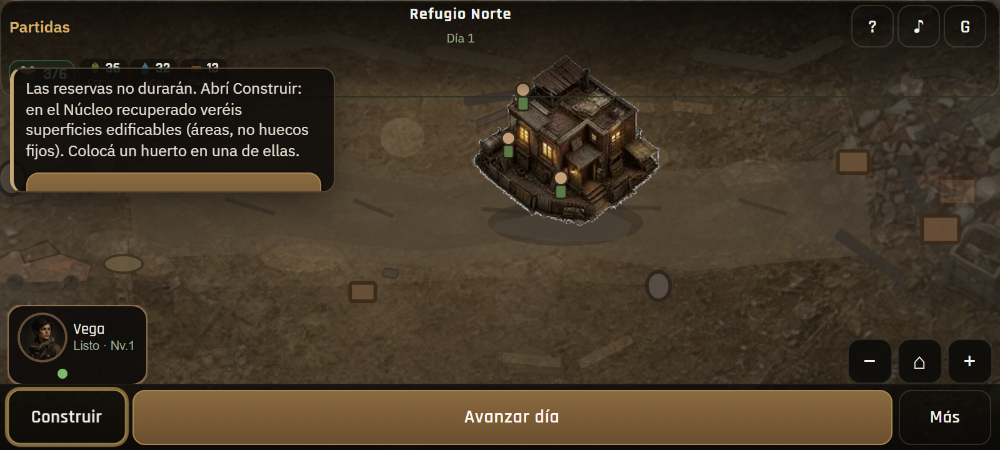
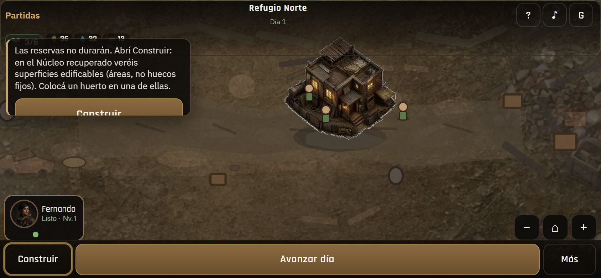
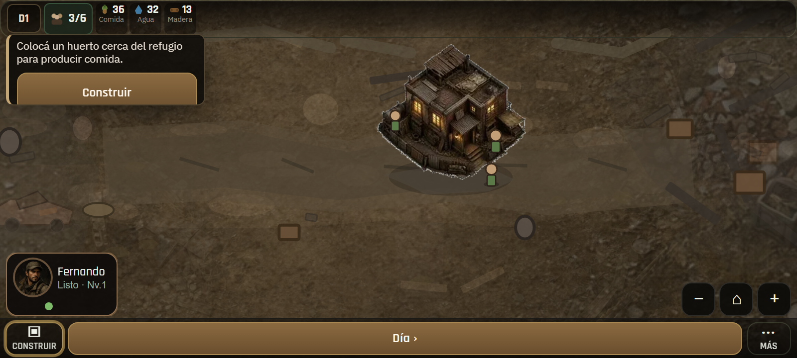
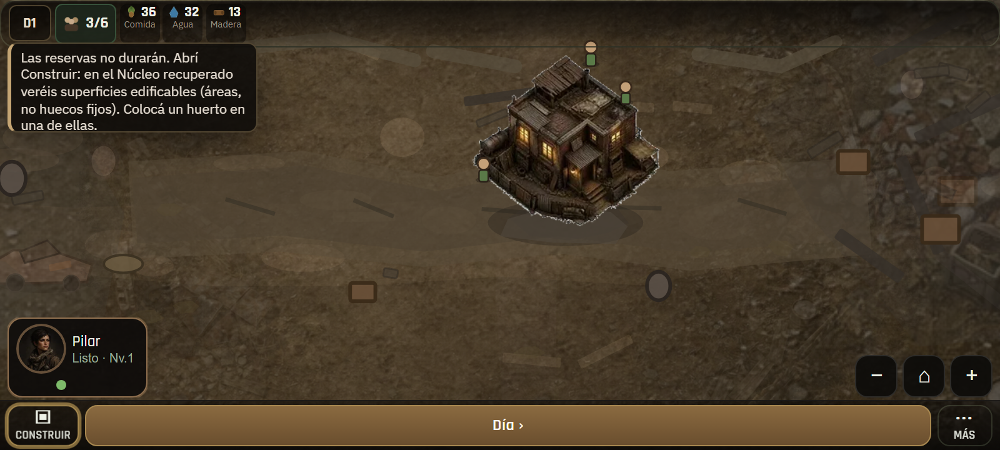
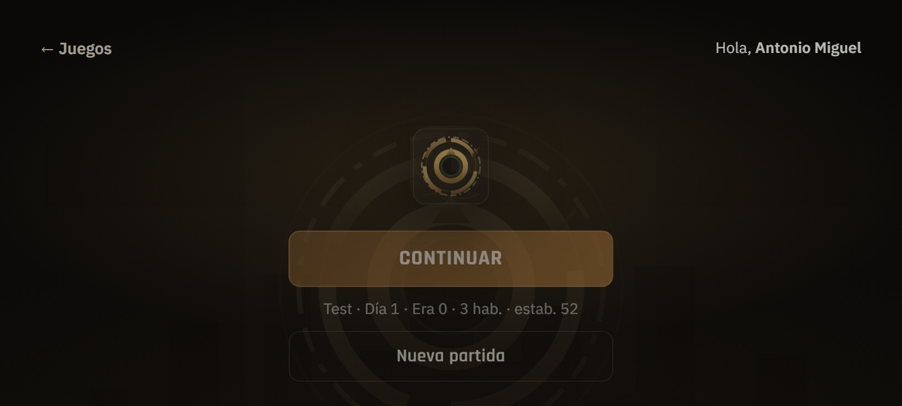
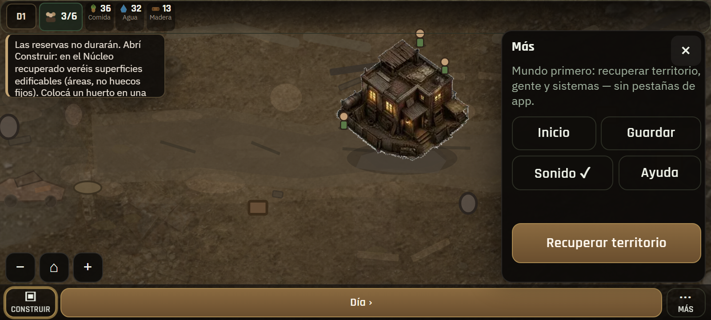
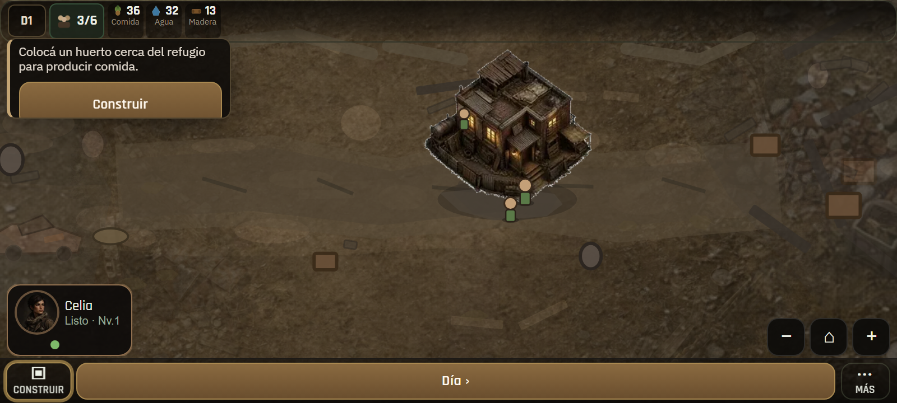

Zona Zero · PT1-A (PWA / HUD / portada)
Chrome propio 800×360: 36.3% → 21.6%. PWA recomendada; browser también jugable.

BEFORE · 800×360 browser

BEFORE · 844×390

AFTER harness · 800×360

AFTER prod · 800×360
AFTER · clase standalone

Portada logo-first · prod

Más · accesos compactos

Coach compacto